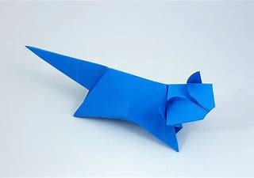

Origami Paper Art
Bird Origami Art
Some facts about birds:-
1-There are around 10,000 different species of bird.
2-Some birds can mimic humans!
3-Birds are great communicators.

Cat Origami Art
Some facts about cats:-
1-Cats are believed to be the only mammals who don't taste sweetness.
2-Cats are nearsighted, but their peripheral vision and night vision are much better than that of humans.
3-Cats can jump up to six times their length.